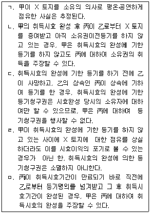
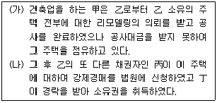

변리사-1차(2교시) (2008-03-09 기출문제)
1. 종물에 관한 설명 중 옳지 않은 것은? (다툼이 있는 경우에는 판례에 의함)
- 종물은 동산이어야 하며, 부동산은 종물이 될 수 없다.
- 호텔의 각 방실에 시설된 텔레비전, 전화기 등의 집기는 호텔 건물의 종물이 아니다.
- 종물은 주물의 구성부분이 아닌 독립된 물건이다.
- 주유소에 설치된 주유기는 주유소 건물의 종물이다.
- 횟감용 생선을 보관하기 위하여 횟집으로 사용할 점포 건물에 거의 붙여서 신축한 수족관 건물은 점포 건물의 종물이다.
(정답률: 알수없음)

2. 점유개정 및 목적물반환청구권의 양도에 관한 설명으로 옳지 않은 것은? (다툼이 있는 경우에는 판례에 의함)
- 점유개정의 방법으로 동산에 대한 이중의 양도담보설정계약이 체결된 경우, 뒤에 양도담보설정계약을 체결한 후순위채권자가 선의ㆍ무과실이라면 양도담보권을 선의취득한다.
- 돈사에서 대량으로 사육되는 돼지에 대해 점유개정의 방법으로 양도담보를 설정한 경우, 양도담보권의 효력은 양도담보 설정자로부터 이를 양수한 자가 별도의 자금을 투입하여 반입한 돼지에는 미치지 않는다.
- 동산의 선의취득에 필요한 점유의 취득은 현실적 인도가 있어야 하고 점유개정에 의한 점유취득만으로서는 그 요건을 충족할 수 없다.
- 양도인이 소유자로부터 보관을 위탁받은 주권을 제3자에게 보관시킨 경우에 반환청구권의 양도에 의하여 주권의 선의취득에 필요한 요건인 주권의 점유를 취득하기 위하여는 양도인이 그 제3자에 대한 반환청구권을 양수인에게 양도하고 지명채권양도의 대항요건을 갖추어야 한다.
- 동산에 대하여 점유개정의 방법으로 양도담보를 일단 설정한 후에는 양도담보권자나 양도담보설정자가 그 동산에 대한 점유를 상실하였다 하여 양도담보권이 소멸되는 것은 아니다.
(정답률: 알수없음)
3. 甲은 자신의 주택에 대하여 乙에게 전세권을 설정해준 후, 丙으로부터 자금을 빌리면서 이행기까지 변제하지 못하면 위 주택에 대한 소유권을 이전시켜 주기로 하고 丙 앞으로 가등기를 해주었다. 그 후 甲은 丁으로부터 융자를 받으면서 위 주택에 대하여 丁에게 근저당권을 설정해 주었다. 이행기가 되어도 변제를 받지 못한 丙은 가등기담보권을 실행하고자 한다. 이에 관한 설명 중 옳은 것은?
- 乙이 전세권의 존속기간이 만료하였으나 전세금을 반환받지 못하였더라도, 乙은 위 주택에 대하여 법원에 경매를 신청할 수 없다.
- 丙이 적법한 실행절차를 거쳐 위 주택의 소유권을 취득하면 乙의 전세권은 당연히 소멸한다.
- 丙은 소유권취득에 의한 실행의 방법만을 취할 수 있고, 위 주택에 대한 경매를 법원에 신청할 수는 없다.
- 丙의 청산금 평가액에 대하여 이의가 있는 丁은 자기 채권의 변제기가 도래하기 전에 위 주택에 대한 경매를 법원에 신청할 수 없다.
- 丙이 甲에 대하여 지급할 청산금이 있다면, 丁은 그 청산금을 자신에게 지급할 것을 청구할 수 있다.
(정답률: 알수없음)
4. 경개에 관한 설명 중 옳은 것은? (다툼이 있는 경우에는 판례에 의함)
- 채무의 중요부분의 변경이 있다면 경개의사가 없더라도 경개계약은 성립한다.
- 채무자변경의 경개계약은 구채무자의 의사에 반하더라도 채권자와 신채무자간의 합의로 유효하게 성립한다.
- 경개로 인한 신채무가 원인의 불법 또는 당사자가 알지 못하는 사유로 성립하지 않거나 취소되더라도 구채무는 부활하지 않는다.
- 경개에 의하여 성립된 신채무가 이행되지 않을 때에는 채무불이행을 이유로 경개계약을 해제할 수 있다.
- 경개계약의 성립 후에 그 계약을 합의해제하여 구채권을 부활시키는 것은 적어도 당사자 사이에서는 가능하다.
(정답률: 알수없음)
5. 표현대리에 관한 설명 중 판례의 입장과 다른 것은?
- 사회통념상 대리권을 추단할 수 있는 직함이나 명칭 등의 사용을 승낙 또는 묵인한 경우 본인에 의한 대리권 수여의 표시가 있는 것으로 볼 수 있다.
- 기본적인 대리권이 없는 자에 대하여도 대리권한의 유월 또는 소멸 후의 표현대리관계가 성립할 수 있다.
- 부분적 포괄대리권을 가진 상업사용인이 특정된 영업이나 특정된 사항에 속하지 않는 행위를 한 경우 영업주가 책임을 지기 위하여는 민법상의 표현대리의 법리에 의하여 그 상업사용인과 거래한 상대방이 그 상업사용인에게 그 권한이 있다고 믿을 만한 정당한 이유가 있어야 한다.
- 표현대리행위가 성립하는 경우에는 본인이 표현대리행위에 대하여 전적인 책임을 져야 하고 상대방에게 과실이 있다고 하더라도 과실상계의 법리를 유추적용하여 본인의 책임을 경감할 수 없다.
- 권한을 넘은 표현대리에 있어서 정당한 이유의 존부는 대리행위 당시의 제반 사정을 기준으로 판단하여야 하고 그 후의 사정을 고려해서는 안 된다.
(정답률: 알수없음)
6. 甲은 2007년 3월 5일 자기 소유의 X 토지를 乙에게 매도하는 계약을 체결 하였다. 그런데 乙은 재산상황을 은폐하기 위하여 X 토지에 대한 소유권 이전등기를 친척인 丙 명의로 하기로 미리 丙의 양해를 얻어 두었다. 乙은 甲에게 매매대금의 지급을 완제한 후 소유권이전등기를 丙명의로 해줄 것을 부탁하였고, 甲은 그 부탁대로 丙에게 소유권이전등기를 해주었다. 이에 관한 설명 중 옳지 않은 것은? (다툼이 있는 경우에는 판례에 의함)
- 乙과 丙 사이에는 명의신탁약정이 있은 것으로 볼 수 있고, 이러한 약정은 무효가 된다.
- 甲으로부터 丙으로의 소유권이전등기는 무효이므로, X 토지에 대한 소유권자는 여전히 甲이다.
- 甲으로부터 丙으로의 소유권이전등기는 무효이므로, 乙은 甲에 대하여 매매대금의 반환을 청구할 수 있다.
- 乙은 甲을 대위하여 丙 명의의 소유권이전등기에 대한 말소등기절차의 이행을 청구할 수 있다.
- 丙이 X 토지를 丁에게 팔고 그 소유권이전등기도 경료해 주었다면, 丁은 선의ㆍ악의를 불문하고 보호를 받을 수 있다.
(정답률: 알수없음)
7. 이행지체에 관한 설명 중 옳지 않은 것은? (다툼이 있는 경우에는 판례에 의함)
- 채무이행에 불확정기한을 정한 경우, 기한의 도래를 안 채권자의 최고가 있으면 채무자가 기한의 도래를 알지 못하더라도 그 최고가 도달한 다음날로부터 이행지체가 된다.
- 당사자가 불확정한 사실이 발생한 때를 이행기로 정한 경우에 그 사실의 발생이 불가능하게 된 때에도 이행기가 도래한 것으로 보아야 한다.
- 채무이행에 기한의 정함이 없는 경우에는 이행청구를 받은 다음날로부터 이행지체가 된다.
- 금전채무의 지연손해금채무는 금전채무의 이행지체로 인한 손해배상채무로서, 지연손해금채무가 확정된 때로부터 이행지체가 된다.
- 정지조건부 기한이익 상실의 특약이 있는 경우, 그 특약에 정한 기한이익 상실 사유가 발생하면 기한의 이익을 상실케 하는 채권자의 의사표시가 없더라도 채무자는 그 때부터 이행지체가 된다.
(정답률: 알수없음)
8. 권리 및 그 행사에 관한 설명 중 옳지 않은 것은? (다툼이 있는 경우에는 판례에 의함)
- 미성년자가 사기를 당하여 자신에게 불리한 법률행위를 한 경우에는 행위무능력으로 인한 취소권과 사기로 인한 취소권이 발생하여 경합하게 된다.
- 근보증계약에 있어서 그 계약 체결 당시의 근보증인의 지위의 변화가 있으면 사정변경의 원칙에 따른 해지가 인정되지만, 채무액이 확정되었다면 사정변경의 원칙에 따른 해지가 인정되지 않는다.
- 강행법규에 위반하여 무효인 수익보장약정이 위탁회사가 먼저 제의하여 체결된 것이라고 하더라도, 강행법규를 위반한 자가 스스로 그 약정의 무효를 주장하는 것은 신의칙(모순행위금지의 원칙)에 반하므로 인정되지 않는다.
- 인지청구권은 포기할 수 없는 이상 이 권리에는 실효의 원칙이 적용되지 않는다.
- 상계할 목적으로 상대방 발행의 약속어음을 액면가의 40%에도 미치지 못하는 가격으로 할인 취득하고 어음금채권을 자동채권으로 하여 상계하였다면 권리남용에 해당하고, 이때에는 일반적인 권리남용의 경우에 요구되는 주관적 요건을 필요로 하지 않는다.
(정답률: 알수없음)
9. 甲은 乙에 대하여 5,000만원의 매매대금채권을 가지고 있었다. 甲은 2008년 2월 11일에 丙에게 그 채권을 양도하고, 다시 2008년 2월 12일에 丁에게 이중으로 양도하였다. 이에 관한 설명 중 옳지 않은 것은? (다툼이 있는 경우에는 판례에 의함)
- 丙에 대한 양도는 확정일자 있는 증서가 아닌 서면으로 乙에게 통지하고, 丁에 대한 양도는 확정일자 있는 증서로 乙에게 통지하였다면, 丁이 丙에 우선한다.
- 丙 및 丁에 대한 각 양도가 모두 확정일자 있는 증서로 통지된 경우에 丙에 대한 양도에 관한 통지가 2월 15일에, 丁에 대한 양도에 관한 통지가 2월 14일에 각각 乙에게 도달하였다면, 丁이 丙에 우선한다.
- 丙에 대한 양도에 관한 통지가 확정일자 있는 증서가 아닌 서면으로 2월 13일에 乙에게 도달하자 乙이 그 날 바로 丙에게 5,000만원을 지급하였는데, 丁에 대한 양도에 관한 확정일자 있는 증서에 의한 통지가 2월 14일에 乙에게 도달하였다면, 乙은 이제 丁에게 다시 5,000만원을 지급하지 않으면 안 된다.
- 두 통지가 모두 확정일자 있는 증서로 동시에 乙에게 도달하였다면, 乙은 5,000만원을 변제공탁함으로써 자신의 채무를 면할 수 있다.
- 두 통지가 모두 확정일자 있는 증서로 동시에 乙에게 도달하였다면, 丙과 丁은 모두 乙에 대하여 5,000만원의 지급을 청구할 수 있다.
(정답률: 알수없음)
10. 소멸시효에 관한 설명 중 옳지 않은 것은?
- 소멸시효는 그 기산일에 소급하여 효력이 생긴다.
- 주된 권리의 소멸시효가 완성되면 종된 권리에도 그 효력이 미친다.
- 채권자가 이행청구 또는 해지통고를 한 후에 일정한 기간 또는 상당한 기간이 경과한 이후에 비로소 채무자의 이행을 청구할 수 있는 권리는 전제가 되는 청구나 해지통고를 할 수 있는 때로부터 정해진 유예기간이 경과한 시점부터 소멸시효가 진행한다.
- 소멸시효에 관한 규정은 강행규정이므로, 소멸시효는 법률행위에 의하여 단축 또는 경감할 수 없다.
- 점유권과 유치권은 소멸시효에 걸리지 않는다.
(정답률: 알수없음)
11. 다음 설명 중 옳지 않은 것은? (다툼이 있는 경우에는 판례에 의함)
- 임시이사와 특별대리인 및 직무대행자도 법인의 대표기관이다.
- 민법은 사단법인은 사원이 없게 된 때에 해산한다고 규정하므로 사원이 1人인 사단법인도 있을 수 있다.
- 법인은 평상시에는 주무관청의 감독을 받지만 해산ㆍ청산의 경우에는 법원의 감독을 받는다.
- 아파트 단지의 입주자대표회의의 단체적 성질은 법인 아닌 사단이 아니라 조합이다.
- 법인 아닌 사단은 대표자가 있으면 민사소송에서 당사자가 될 수 있고 부동산등기에서 등기권리자 또는 등기의무자가 될 수 있다.
(정답률: 알수없음)
12. 동시이행관계가 인정되지 않는 것은? (다툼이 있는 경우에는 판례에 의함)
- 주택임대차관계에 있어서 임차권등기명령에 의하여 등기가 된 경우, 임대인의 임대차보증금 반환의무와 임차인의 임차권등기 말소의무
- 토지 임차인이 건물매수청구권을 행사한 경우, 토지 임차인의 건물명도 및 소유권이전등기의무와 토지 임대인의 건물대금지급의무
- 매매 목적인 권리가 타인의 소유임을 알지 못한 선의의 매도인이 매매계약을 해제한 경우, 매도인의 손해배상의무와 매수인의 목적물 및 그 사용이익 반환의무
- 매매계약에서 매수인이 선이행하기로 약정한 잔금지급의무를 이행하지 않고 있는 사이에 매도인의 소유권이전등기의무의 이행기가 도과한 경우, 매도인과 매수인 쌍방의 의무
- 채무의 이행확보를 위하여 어음을 발행한 경우, 채무의 이행과 어음의 반환의무
(정답률: 알수없음)
13. 해외지점에 근무하게 된 甲은 외국에서 박사학위를 받고 귀국한 친구 乙이 거주할 집을 구하지 못하고 있음을 알고 자신의 집을 무상으로 사용하도록 乙과 합의하였다. 이에 관한 설명 중 옳지 않은 것은?
- 사용기간을 정하지 않은 때에는 乙은 언제든지 그 주택을 반환할 수 있지만, 甲은 6개월의 유예기간을 두고 반환청구를 하여야 한다.
- 乙은 甲의 승낙 없이는 제3자에게 그 주택을 사용ㆍ수익하게 하지 못한다.
- 乙이 주택을 일반적인 용법에 따라 사용하던 중 출입문에 고장이 생겨 이를 수리하였더라도 나중에 甲에게 그 비용의 상환을 청구할 수 없다.
- 乙이 사망하거나 파산선고를 받은 때에는 甲은 계약을 해지할 수 있다.
- 甲이 그 주택의 흠이나 하자를 알면서도 乙에게 알리지 않았다면 乙에게 담보책임을 진다.
(정답률: 알수없음)
14. 甲ㆍ乙ㆍ丙은 각각 5억원씩 출자하여 수퍼마켓을 경영하기로 하는 조합 계약을 맺고, 출자금 중에서 10억원을 주고 건물 1채를 구입하였다. 나머지 출자금으로는 물건의 구입 기타 비용으로 사용하였다. 이에 관한 설명 중 옳지 않은 것은? (다툼이 있는 경우에는 판례에 의함)
- 위 건물에 대하여 3인의 합유관계가 성립하기 위해서는 조합체의 합유등기가 있어야 하지만, 건물에 대한 점유는 이전받지 않아도 무방하다.
- 만약 丁이 등기서류를 위조하여 위 건물을 丁의 소유로 등기하고 있는 경우, 丙은 단독으로 그에 대한 말소등기소송을 제기할 수 없다.
- 乙이 사망한 경우, 합유자 사이에 특별한 약정이 없는 한, 사망한 乙의 상속인 丁이 합유자로서의 지위를 승계하는 것이 아니고, 위 건물은 甲과 丙의 합유로 귀속된다.
- 甲이 자신의 합유지분을 포기하였더라도 乙ㆍ丙에게 합유지분권 이전등기가 되기 전이라면, 甲은 제3자에 대하여 여전히 합유지분권자로서의 지위를 주장할 수 있다.
- 甲과 乙의 동의가 있으면, 丙은 자신의 합유지분을 타인에게 매도할 수 있다.
(정답률: 알수없음)
15. 당사자 일방이 계약교섭 단계에서 계약이 확실하게 체결될 것이라는 정당한 기대 내지 신뢰를 부여하여 상대방이 그 신뢰에 따라 행동하였음에도 불구하고 상당한 이유 없이 계약체결을 거부한 경우에 야기되는 법률관계에 관한 설명 중 옳지 않은 것은? (다툼이 있는 경우에는 판례에 의함)
- 일방이 정당한 이유 없이 계약체결을 거부하여 손해가 발생하였다면 불법행위책임이 성립할 수 있다.
- 배상되어야 할 손해는 당사자 일방이 신의에 반하여 상당한 이유 없이 계약교섭을 파기함으로써 계약체결을 신뢰한 상대방이 입게 된 상당인과관계에 있는 손해로서 계약이 유효하게 체결된다고 믿었던 것에 의하여 입었던 손해에 한정된다.
- 계약 성립을 기대하고 지출한 계약준비비용 이외에 계약체결을 위하여 불가피하게 소요되는 비용, 예컨대 경쟁입찰에 참가하기 위하여 지출한 제안서, 견적서 작성비용 등도 손해배상의 범위에 포함된다.
- 계약교섭의 파기로 인한 불법행위가 인격적 법익을 침해함으로써 상대방에게 정신적 고통을 초래하였다고 인정되는 경우라면 그러한 정신적 고통에 대한 손해에 대하여는 별도로 배상을 구할 수 있다.
- 이행의 착수가 상대방의 적극적인 요구에 따른 것이고 그 이행에 들어간 비용의 지급에 대하여 이미 계약교섭이 진행되고 있었다면 이행을 위하여 지출한 비용도 상당인과관계 있는 손해에 해당한다.
(정답률: 알수없음)
16. 합의해제에 관한 설명 중 옳지 않은 것은? (다툼이 있는 경우에는 판례에 의함)
- 계약이 합의해제되기 위해서는 쌍방 당사자의 표시행위에 나타난 의사의 내용이 서로 객관적으로 일치하여야 한다.
- 계약이 합의해제되기 위해서는 청약과 승낙이라는 명시적인 의사표시가 있어야 하므로 묵시적인 합의해제는 인정되지 않는다.
- 합의해제의 효력은 그 합의 내용에 의하여 결정되고 해제에 관한 민법 제543조(해지, 해제권) 이하의 규정은 적용되지 않는다.
- 매매계약을 합의해제한 후 해제된 매매계약을 부활시키는 약정도 계약 자유의 원칙상 허용된다고 보아야 한다.
- 합의해제되면 계약은 소급하여 소멸되므로 원상회복의무가 발생하지만 이로 인하여 제3자의 권리를 해하지는 못한다.
(정답률: 알수없음)
17. 甲이 乙 소유의 X 토지를 20년간 소유의 의사로 평온ㆍ공연하게 점유하여 취득시효가 완성된 경우에 관한 설명으로서 옳지 않은 내용을 모두 묶은 것은? (각 사안은 독립적이며, 다툼이 있는 경우에는 판례에 의함)

- ㄱ, ㄴ
- ㄴ, ㄷ
- ㄴ, ㄹ
- ㄷ, ㄹ
- ㄹ, ㅁ
(정답률: 알수없음)
18. 민법상 법인에 관한 설명 중 옳지 않은 것은?
- 이사의 임면에 관한 규정은 정관의 필요적 기재사항이고, 이사의 성명과 주소는 등기사항이다.
- 사단법인의 정관은 사원총회 뿐만 아니라 대의원회나 평의회에서도 변경할 수 있다는 정관의 규정은 유효하다.
- 법인의 존립시기나 해산사유를 정한 때에는 사단법인에서는 정관에 기재하여야 하나 재단법인에서는 기재하지 않아도 무방하다.
- 정관에 다른 규정이 없는 한 사단법인의 사원은 서면이나 대리인을 통하여 결의권을 행사할 수 있다.
- 법인의 설립등기는 법인성립의 요건이지만 그 밖의 등기는 제3자에게 대항하기 위한 요건에 지나지 않는다.
(정답률: 알수없음)
19. 채권자대위권에 관한 설명 중 옳은 것은? (다툼이 있는 경우에는 판례에 의함)
- 채권자취소권을 대위행사하는 경우 취소채권자가 취소원인을 안 지 1년이 지났다면, 채무자가 취소원인을 안 날로부터 1년 또는 사해행위가 있은 날로부터 5년 내라 하더라도 채권자취소소송을 제기할 수 없다.
- 타인에게 적법하게 명의신탁한 토지에 대하여 제3자의 침해행위가 있는 경우에 명의신탁자는 명의수탁자를 대위하여 방해배제청구를 할 수 있을 뿐만 아니라 직접 제3자에게 방해배제를 청구할 수도 있다.
- 대위채권자의 채권의 소멸시효가 완성된 경우에 채권자대위소송의 제3채무자는 그 소멸시효의 완성을 주장할 수 있다.
- 대위채권자가 채무자에게 대위사실을 통지하지 않았다 하더라도 채무자가 채권자대위권 행사 사실을 알고 있었다면, 채무자가 대위행사된 권리를 처분하더라도 그 처분으로 채권자에게 대항할 수 없다.
- 채무자가 스스로 그 권리를 행사하고 있는 경우에 그 행사 방법이 부적당하다면 채권자는 대위권을 행사할 수 있다.
(정답률: 알수없음)
20. 착오에 의한 의사표시에 관한 설명 중 옳지 않은 것은? (다툼이 있는 경우에는 판례에 의함)
- 동기가 상대방에 의하여 제공되거나 유발된 경우에 동기의 표시 여부와 무관하게 착오를 이유로 취소할 수 있다.
- 법률의 착오가 있는 경우에 그것이 법률행위 내용의 중요부분에 관한 것일 때에는 그 의사표시를 취소할 수 있다.
- 근저당권설정계약에 있어서 채무자의 동일성에 관한 착오는 법률행위 내용의 중요부분의 착오이다.
- 회사성립 전에 주식을 인수한 자는 회사성립 후에는 착오를 이유로 그 인수를 취소하지 못한다.
- 채권액이 900만원임에도 불구하고 채권자가 700만원으로 오인하여 '채권액이 500만원이라고 주장하는 채무자'와 채권액을 600만원으로 하는 화해계약을 한 경우에는 그 후에 채권액에 대한 착오를 이유로 취소할 수 있다.
(정답률: 알수없음)
21. 주위토지통행권에 관한 설명 중 옳지 않은 것은? (다툼이 있는 경우에는 판례에 의함)
- 주위토지통행권은 주위의 토지를 통행 또는 통로로 하지 않으면 공로에 출입할 수 없는 경우뿐 아니라 과다한 비용을 요하는 경우에도 인정된다.
- 주위토지통행권자는 통행권의 범위 내에서 자기의 부담으로 통행지에 돌계단을 조성하거나 포장을 하는 방법으로 통로를 개설할 수 있다.
- 주위토지통행권자는 통행지의 소유자에 대하여 통행권에 기하여 토지의 인도청구를 할 수 있다.
- 주위토지통행권자가 통행지를 통행함에 그치지 않고 이를 배타적으로 점유하고 있다면 통행지의 소유자는 주위토지통행권자에 대하여 토지의 인도를 청구할 수 있다.
- 주위토지통행권자가 통행지의 소유자에게 손해를 보상할 의무를 지는 경우에 그 보상의무를 이행하지 않더라도 통행권 자체가 소멸하는 것은 아니다.
(정답률: 알수없음)
22. 乙은 甲 소유의 X 토지를 매수하면서 매매대금의 일부만을 지급하고 점유를 이전받았다. 그 후 乙은 소유권이전등기를 경료받기 전에, 다시 X 토지를 매매대금 전부를 받고 丙에게 전매하고 점유를 이전하면서 乙이 甲에 대하여 가지고 있는 X 토지에 대한 소유권이전등기청구권을 丙에게 양도하였다. 그리고 乙은 이 사실을 甲에게 통지하였다. 이에 관한 설명 중 옳은 것은? (다툼이 있는 경우에는 판례에 의함)
- 乙은 현재 X 토지를 점유하고 있지 않으므로 乙의 甲에 대한 소유권이전등기청구권은 점유를 상실한 때로부터 소멸시효가 진행한다.
- 甲의 乙에 대한 잔대금지급청구권은 변제기로부터 소멸시효가 진행한다.
- 丙의 乙에 대한 소유권이전등기청구권은 X 토지를 인도받은 때로부터 소멸시효가 진행한다.
- 丙은 甲에게 X 토지에 대한 소유권이전등기를 청구할 수 있다.
- 丙은 乙을 대위하여 甲에게 X 토지에 대한 소유권이전등기를 청구할 수 없다.
(정답률: 알수없음)
23. 다음 사례에 관한 설명 중 옳지 않은 것은? (다툼이 있는 경우에는 판례에 의함)

- (가)에서 甲은 乙의 승낙이 있으면 위 주택을 다른 사람에게 임대하고, 그 임차료를 받아 자신의 공사대금 채권에 충당할 수 있다.
- (가)에서 甲은 자신이 위 주택에 관하여 지출한 필요비의 상환을 乙에게 청구할 수 있다.
- (가)에서 甲은 위 주택에 대하여 법원에 경매를 신청하여, 그 매각대금으로부터 공사대금을 다른 권리자에 우선하여 변제를 받을 수 있다.
- (나)에서 丁이 甲에게 위 주택의 인도를 청구하더라도, 甲은 공사대금을 변제받지 못하였음을 이유로 그 주택의 인도를 거절할 수 있다.
- (나)에서 甲은 丁에 대하여는 공사대금의 변제를 청구할 수 없다.
(정답률: 알수없음)
24. 증여에 관한 설명 중 옳은 것은? (다툼이 있는 경우에는 판례에 의함)
- 아직 형성되지 않은 종중에 대한 증여의 의사표시도 유효한 청약으로 보아야 한다.
- 민법 제555조(서면에 의하지 아니한 증여와 해제)의 해제는 원래 의미의 해제와는 본질을 달리하나, 제척기간은 법정해제의 경우와 같다.
- 증여자가 타인으로부터 매수한 토지에 대하여 소유권이전등기를 하지 않은 상태에서 수증자와 서면에 의하지 않은 증여계약을 체결하면서 그 토지에 관한 소유권이전등기청구권을 수증자에게 양도하고 매도인에게 양도통지까지 마쳤다면, 증여자가 해제를 한다 하더라도 수증자의 법적 지위에는 영향이 없다.
- 서면에 의하지 않은 부동산의 증여에 있어서 증여자의 채무는 목적부동산의 인도와 등기 이전이므로, 증여자가 수증자에게 인도를 하지 않고 소유권이전등기만 완료한 상태에서 증여계약을 해제하면 증여자는 소유권을 회복할 수 있다.
- 상대부담 있는 증여라 하더라도 증여계약으로서의 본질을 유지하므로 그 증여가 서면에 의한 것이 아니라면 각 당사자가 해제할 수 있다.
(정답률: 알수없음)
25. 물권적 청구권에 관한 설명 중 옳지 않은 것은? (다툼이 있는 경우에는 판례에 의함)
- 甲이 자기 소유 토지를 乙에게 매도하고 인도하였으나 이전등기는 하지 않은 채로 乙이 그 토지 위에 건물을 신축하고 등기를 마쳤다. 乙이 그 건물의 소유권과 점유를 丙에게 이전한 경우, 甲은 丙에 대하여 토지소유권에 기한 물권적 청구권을 행사할 수 없다.
- 토지소유자 甲은 서류를 위조하여 그 토지에 대한 소유권이전등기를 경료하고 있는 乙을 상대로 하여 그 등기의 말소를 구하는 외에 '진정한 등기명의의 회복'을 원인으로 한 소유권이전등기절차의 이행을 직접 청구할 수 있다.
- 甲이 자기 소유 토지에 대하여 乙에게 지상권을 설정해준 후 그 토지를 丙이 불법으로 점유하고 있다면 乙뿐만 아니라 甲도 丙에 대하여 방해 배제를 청구할 수 있다.
- 甲이 자기 소유 토지를 乙에게 매도하고 인도하였는바 乙이 소유권이전 등기를 경료받기 전에 丙에게 다시 매도하고 점유까지 이전한 경우 甲은 丙에 대하여 소유권에 기한 물권적 청구권을 행사할 수 없다.
- 건물을 신축하여 그 소유권을 원시취득한 甲으로부터 그 건물을 미등기인 상태로 매수한 乙은 그 건물을 불법점유하고 있는 丙에 대하여 甲을 대위하여 그 건물의 명도를 청구할 수 없다.
(정답률: 알수없음)
26. 금전채무에 관한 설명 중 옳은 것은? (다툼이 있는 경우에는 판례에 의함)
- 금전채무의 채무자도 채무불이행이 자기에게 책임 없는 사유로 인한 것임을 증명하여 면책될 수 있다.
- 약정이율이 있는 소비대차에서 변제기 후의 이자에 관한 별도의 약정이 없는 경우에 변제기가 지난 후에는 법정이율에 의한 이자를 지급하여야 한다.
- 금전채무 불이행의 경우에 약정이율 또는 법정이율에 따라 산정된 액을 초과하는 손해가 발생하더라도 채권자는 그 초과액에 대한 배상을 구할 수 없다.
- 금전을 탈취당한 자에게 소유물반환청구권이 인정되지는 않는다.
- 채무자가 최고이자율을 초과하는 이자를 임의로 지급한 경우에 초과 지급된 이자 상당금액이 원본에 충당되지는 않는다.
(정답률: 알수없음)
27. 저당권의 효력이 미치는 범위에 관한 설명 중 옳은 것은? (다툼이 있는 경우에는 판례에 의함)
- 저당권설정자가 저당목적물로부터 저당권설정 이후 수취한 과실 전부에 대하여 저당권의 효력이 미친다.
- 건물의 증축 부분이 기존건물에 부합하여 기존건물과 분리하여서는 별개의 독립물로서의 효용을 갖지 못하였더라도, 기존건물에 대한 저당권의 경매절차에서 그 증축부분이 경매목적물로 평가되지 않은 이상, 경락인은 그 부합된 증축부분의 소유권을 취득하지 못한다.
- 구분건물의 전유부분에 대해서만 설정된 저당권의 효력은, 그 전유부분의 소유자가 후에 대지사용권을 취득함으로써 전유부분과 대지권이 동일 소유자의 소유에 속하게 되더라도, 그 대지사용권에까지 미치지 않는 것이 원칙이다.
- 건물에 대한 저당권이 실행되어 경락인이 그 건물의 소유권을 취득하였다면, 경락 후 건물을 철거한다는 등의 특별한 사정이 없는 한, 경락인은 건물의 소유를 위한 법정지상권도 등기없이 당연히 취득한다.
- 저당권설정자가 저당권자 몰래 저당목적물을 매각한 경우 그 매매대금에 대하여 저당권의 효력이 미친다.
(정답률: 알수없음)
28. 甲은 자기 소유의 대지 위에 건물을 신축하기로 하는 도급계약을 乙과 체결 하였다. 이에 관한 설명 중 옳지 않은 것은? (다툼이 있는 경우에는 판례에 의함)
- 당사자 사이에 다른 합의가 없으면 도급계약상의 보수채무는 완성된 목적물의 인도와 동시에 이행되어야 한다.
- 당사자 사이의 특약이나 특별한 사정이 없는 한, 乙이 임의로 이행대행자를 사용하여 도급계약에서 정한 공사를 이행하더라도 계약채무 불이행으로 볼 수 없다.
- 甲은 일의 완성 전에 언제든지 도급계약을 해제할 수 있지만 乙이 입은 손해를 배상하여야 하는데, 이 때 甲은 乙에 대한 손해배상에 있어서 과실상계를 주장할 수 없다.
- 완성된 건물의 하자가 甲의 지시에 의한 것이더라도, 그 지시가 부적당함을 알면서도 甲에게 고지하지 않았다면 乙은 담보책임을 진다.
- 위 계약에서 계약이행보증금과 지체상금의 약정이 있는 경우에, 이것들이 과다할 때에는 법원이 감액할 수 있다.
(정답률: 알수없음)
29. 甲은 乙 소유의 건물에 대하여 전세금 5,000만원에 전세권설정계약을 체결하고 등기까지 경료 받았다. 이에 관한 설명으로 옳은 것은? (다툼이 있는 경우에는 판례에 의함)
- 전세권이 성립한 후 건물의 소유권이 乙로부터 丙에게 이전된 경우, 전세권은 甲과 건물의 신소유자 丙 사이에서 계속 동일한 내용으로 존속하고, 丙은 전세권이 소멸하는 때에 전세권설정자의 지위에서 전세금반환의무를 부담한다.
- 만일 전세금반환채권을 담보할 목적으로 甲과 乙 및 제3자 丙 사이의 합의에 따라서 甲이 아닌 제3자 丙의 명의로 전세권설정등기를 경료하였다면, 그 전세권설정등기는 무효이다.
- 전세권은 담보물권적 성격도 가지는 이상 부종성과 수반성이 있으므로, 甲이 전세금반환채권을 전세권과 분리하여 丙에게 양도하더라도 아무런 효력이 생기지 아니한다.
- 甲은 전세금 5,000만원을 반드시 乙에게 현실적으로 지급하여야 하고, 기존의 5,000만원의 대여금 채권으로 전세금의 지급에 갈음할 수는 없다.
- 전세권의 존속기간이 만료되면 전세권설정등기의 말소 없이도 당연히 전세권이 소멸하므로, 甲은 전세권이 만료된 후에는 더 이상 전세권을 그 피담보채권인 전세금반환채권과 함께 제3자에게 양도할 수 없다.
(정답률: 알수없음)
30. 의사표시 등에 관한 설명 중 옳은 것은? (다툼이 있는 경우에는 판례에 의함)
- 백화점과 같은 대형유통업체의 변칙세일(할인판매기간이 끝난 후에도 종전의 가격으로 판매를 계속함)은 그 사술의 정도가 사회적으로 용인될 수 있는 상술의 정도를 넘는 것으로서 위법성이 있다.
- 상대방 있는 의사표시에 관하여 제3자가 강박을 한 경우에는 상대방이 그 사실을 안 경우에 한하여 그 의사표시를 취소할 수 있다.
- 설령 의사표시가 도달되었다 하더라도 상대방이 요지하기 전이라면 철회할 수 있다.
- 사원총회의 소집은 1주간 전에 그 회의 목적사항을 기재한 통지가 사원에게 도달하여야 하며 기타 정관에 정한 방법에 의하여야 한다.
- 의사표시를 공시송달한 경우에 그 의사표시는 법원게시장에 게시한 날로부터 15일이 경과하면 효력이 생긴다.
(정답률: 알수없음)
31. 계약의 무권대리에 관한 설명으로 옳지 않은 것은? (다툼이 있는 경우에는 판례에 의함)
- 무권대리행위의 추인은 본인에게 효력이 없는 대리행위의 효력을 본인에게 소급적으로 귀속시킨다는 점에서 '취소할 수 있는 행위의 추인'과는 다르다.
- 대리권 없는 자가 타인의 대리인으로 계약을 한 경우에 상대방은 상당한 기간을 정하여 추인 여부의 확답을 최고할 수 있는바 본인이 그 기간 내에 확답을 발하지 않은 때에는 추인한 것으로 본다.
- 본인이 추인의 의사표시를 무권대리인에게 하였으나 상대방은 이러한 추인이 있었음을 알지 못하는 경우에 상대방은 그 무권대리인과 체결한 계약을 철회할 수 있다.
- 무권대리행위의 추인은 법률행위 전부에 대하여 행하여야 하고, 일부에 대하여 추인을 하거나 그 내용을 변경하여 추인을 하였을 경우에는 상대방의 동의를 얻지 못하는 한 무효이다.
- 상대방은 그 무권대리행위를 철회한 후에는 무권대리인에 대하여 계약의 이행 또는 손해배상을 청구하지 못한다.
(정답률: 알수없음)
32. 甲이 乙 소유의 임야 위에 자기 부친의 분묘를 설치하여 수호ㆍ관리하고 있는 경우, 판례에 의할 때 옳지 않은 것은?
- 甲이 분묘기지권을 취득한 경우, 분묘기지권에는 그 효력이 미치는 범위 안에서 새로운 분묘를 설치하거나 원래의 분묘를 다른 곳으로 이장할 권능은 포함되지 않는다.
- 甲이 乙의 승낙을 얻어 분묘를 설치한 경우, 분묘가 멸실된 경우라고 하더라도 유골이 존재하여 분묘의 원상회복이 가능하여 일시적인 멸실에 불과하다면 분묘기지권은 소멸하지 않고 존속한다.
- 甲이 분묘기지권을 취득한 경우, 그 효력이 미치는 범위 내라고 하더라도 그 후에 사망한 모친의 합장을 위하여 쌍분(雙墳)형태의 분묘를 설치하는 것은 허용되지 않는다.
- 甲이 乙의 승낙 없이 분묘를 설치한 후 20년간 평온ㆍ공연하게 그 분묘의 기지를 점유하여 분묘기지권을 시효로 취득한 경우, 甲은 乙에게 지료를 지급하여야 한다.
- 甲이 분묘기지권을 취득한 경우, 사성(莎城, 무덤 뒤를 반달형으로 둘러쌓은 둔덕)이 조성되어 있다 하여 반드시 그 사성부분을 포함한 지역에까지 분묘기지권이 미치는 것은 아니다.
(정답률: 알수없음)
33. 제3자를 위한 계약에 관한 설명 중 옳지 않은 것은? (다툼이 있는 경우에는 판례에 의함)
- 낙약자는 요약자와 수익자 사이의 법률관계에 의한 항변으로 수익자에게 대항하지 못한다.
- 요약자는 대가관계의 부존재나 효력의 상실을 이유로 기본관계에 기하여 낙약자에게 부담하는 자신의 채무이행을 거절할 수 있다.
- 제3자를 위한 유상·쌍무계약의 경우, 요약자는 낙약자의 채무불이행을 이유로 수익자의 동의없이 계약을 해제할 수 있다.
- 수익의 의사표시를 한 제3자는 낙약자의 채무불이행을 이유로 요약자가 계약을 해제한 경우, 낙약자에게 자신의 손해에 대한 배상을 청구할 수 있다.
- 제3자가 수익의 의사표시를 한 후에 요약자와 낙약자가 제3자의 권리를 임의로 변경ㆍ소멸시키는 행위를 하더라도 제3자에게는 그 효력이 발생하지 않는다.
(정답률: 알수없음)
34. 반사회적 법률행위에 관한 설명 중 옳은 것은? (다툼이 있는 경우에는 판례에 의함)
- 불륜관계를 단절하기로 하면서 그 동안에 바친 노력과 비용 등의 희생을 배상 내지 위자하고 또 장래 생활대책을 마련해 준다는 뜻에서 금원을 지급하기로 하는 약정은 반사회적 법률행위로서 무효이다.
- 소송에서 사실대로 증언하여 줄 것을 조건으로 어떠한 급부를 할 것을 약정한 경우에는 그러한 급부의 내용이 통상적으로 용인될 수 있는 수준을 초과하는지 여부에 관계없이 반사회적 법률행위로서 무효이다.
- 회사의 비용으로 해외에 파견되어 연수를 받고 귀국한 근로자는 귀국일로부터 일정기간 소속 회사에 근무하여야 하며 일정기간 근무하지 않으면 해외파견 소요경비를 배상하여야 한다는 사규나 약정은 반사회적 법률 행위로서 무효라고 할 수 없다.
- 법률행위의 성립과정에서 강박이라는 불법적 방법이 사용된 데 불과한 경우에도 반사회질서의 법률행위로서 무효라고 할 수 있다.
- 부동산의 이중매매에 있어서 제1매수인은 자신의 소유권이전등기청구권을 보전하기 위하여 채권자취소권을 행사하여, 매도인과 제3자 사이에 이루어진 제2매매행위를 취소하고 소유권이전등기의 말소를 청구할 수 있다.
(정답률: 알수없음)
35. 위약금에 관한 설명 중 옳지 않은 것은? (다툼이 있는 경우에는 판례에 의함)
- 채무불이행의 경우에 위약금을 지급하기로 한 약정은 손해배상액의 예정으로 추정한다.
- 손해배상예정액이 과다하여 법원이 감액을 함에 있어서, 채권자의 과실이 있다면 법원은 감액에 앞서 따로 과실상계를 하여야 한다.
- 위약금이 채무자의 이행에 의하여 얻게 되는 채권자의 이익에 비하여 지나치게 과다한 경우에는 선량한 풍속 기타 사회질서에 반하여 무효가 될 수 있다.
- 위약금이 위약벌인 때에는 채무자의 채무불이행이 있으면 채권자는 위약금 뿐만 아니라 채무불이행으로 인한 실손해를 증명하여 그 배상을 청구할 수 있다.
- 유상계약을 체결하면서 계약금이 교부된 경우에 이를 위약금으로 하기로 하는 특약이 없는 이상, 계약이 당사자 일방의 귀책사유로 인하여 해제되었다 하더라도 그 계약금이 위약금으로서 상대방에게 당연히 귀속되는 것은 아니다.
(정답률: 알수없음)
36. 보증채무에서의 구상에 관한 설명 중 옳은 것은? (다툼이 있는 경우에는 판례에 의함)
- 주채무자가 파산선고를 받았다면 수탁보증인은 채권자가 파산재단에 가입하였는가 여부와 무관하게 사전구상권을 행사할 수 있다.
- 수탁보증인의 사전구상권과 사후구상권은 그 종국적 목적과 사회적 효용을 같이하는 공통성을 가지므로 법적 성질을 같이하고 소멸시효도 같이 진행된다.
- 면책행위를 한 주채무자는 보증인에게 그 사실을 통지하여야 하는데, 부탁 없는 보증인이라고 하여 다르지 않다.
- 주채무자가 면책행위를 하고도 보증인에게 통지를 하지 않고 있는 동안에 보증인이 재차 면책행위를 하였다면, 보증인이 주채무자에게 사전통지를 했는가 여부와 무관하게 주채무자에 대하여 구상권을 행사할 수 있다.
- 수인의 연대채무자 중 1인을 위하여 보증인이 된 사람은 다른 연대채무자에 대하여 그 부담부분에 한하여 구상권이 있다.
(정답률: 알수없음)
37. 대리권의 범위에 관한 설명 중 판례의 입장과 다른 것은?
- 부동산의 소유자로부터 매매계약을 체결할 대리권을 수여받은 대리인은 특별한 사정이 없는 한 그 매매계약에서 약정한 바에 따라 중도금이나 잔금을 수령할 권한도 있다.
- 대여금의 영수권한을 위임받은 대리인은 본인의 특별수권이 없는 한 그 대여금 채무의 일부를 면제할 수 없는 것이 원칙이다.
- 소송상의 화해나 청구의 포기에 관한 특별수권이 있는 경우에는, 당해 소송물인 권리의 처분이나 포기에 대한 권한도 수여되어 있다고 보아야 한다.
- 예금계약의 체결을 위임받은 자가 가지는 대리권에는 그 예금을 담보로 하여 대출을 받거나 이를 처분할 수 있는 대리권이 포함되어 있다고 보아야 한다.
- 일반적으로 임의대리권에는 그 권한에 부수하여 필요한 한도에서 상대방의 의사표시를 수령하는 수령대리권을 포함한다.
(정답률: 알수없음)
38. 무효와 취소에 관한 설명 중 옳지 않은 것은? (다툼이 있는 경우에는 판례에 의함)
- 사회질서에 반하여 무효인 법률행위는 추인에 의하여 유효로 될 수 없다.
- 무효인 가등기를 유효한 등기로 전용하기로 한 약정은 그때부터 유효하고, 이로써 그 가등기가 소급하여 유효한 등기로 전환될 수 없다.
- 매도인이 매수인의 대금채무 불이행을 이유로 매매계약을 적법하게 해제하였다면 매수인은 착오를 이유로 취소권을 행사할 수 없다.
- 취소할 수 있는 법률행위가 일단 취소된 이상 그 후에는 취소할 수 있는 행위의 추인에 의하여 다시 확정적으로 유효하게 할 수는 없고, 다만 무효행위의 추인의 요건과 효력으로서 추인할 수는 있다.
- 甲이 乙로부터 사기를 당하여 자기 소유의 부동산을 乙에게 양도하고, 乙은 그 부동산을 丙에게 양도하였다. 그 후 甲이 사기를 이유로 의사표시를 취소하려면, 취소의 의사표시를 乙에게 하여야 한다.
(정답률: 알수없음)
39. 甲은 AㆍBㆍC 3인이 공유(AㆍBㆍC의 지분은 각각 4/6, 1/6, 1/6임)하는 건물을 乙에게 임대하기로 하는 계약을 체결하여 현재 乙이 건물을 점유하고 있다. 이에 관한 설명 중 옳은 것은? (다툼이 있는 경우에는 판례에 의함)
- 甲에게 그 건물을 임대할 권한이 없는 경우에, 甲과 乙 사이의 임대차 계약은 무효이다.
- 甲에게 그 건물을 임대할 권한이 없다 하더라도 乙은 甲과의 임대차계약으로써 소유자의 소유물반환청구에 대항할 수 있다.
- 그 건물이 반드시 甲의 소유일 것을 특히 계약의 내용으로 삼은 경우라면 乙은 착오를 이유로 임대차계약을 취소할 수 있다.
- A가 다른 공유자 BㆍC의 의사에 반하여 단독으로 甲에게 임대권한을 부여하였다면 乙은 B 또는 C의 물권적 청구권 행사에 대항할 수 없다.
- 丙이 乙과의 계약에 따라 건물을 수리한 경우에, 丙은 乙이 수리비를 지급할 자력이 없는 경우에 한하여 건물의 소유자에게 그 수리비용의 상환을 청구할 수 있다.
(정답률: 알수없음)
40. 손익상계에 관한 설명 중 옳지 않은 것은? (다툼이 있는 경우에는 판례에 의함)
- 법원은 당사자의 주장 여부에 관계없이 손해액을 산정함에 있어서 손익 상계를 하여야 한다.
- 손익상계가 허용되기 위해서는 손해배상책임의 원인행위로 인하여 피해자가 새로운 이득을 얻었고, 그 이득과 손해배상책임의 원인행위 사이에 상당인과관계가 있어야 한다.
- 손해의 발생으로 이득이 생기고 동시에 그 손해발생에 피해자에게도 과실이 있어 과실상계를 하여야 할 경우에는 먼저 과실상계를 한 다음에 손익상계를 하여야 한다.
- 가해자가 피해자의 유족에게 지급한 조위금은 위자료액에서 공제할 것은 아니지만 위자료액을 산정할 때에 참작하여야 할 사정에는 해당한다.
- 도급계약이 해제된 경우에 그 해제로 인하여 수급인이 그 일의 완성을 위하여 들이지 않게 된 자신의 노력을 다른 곳에 사용하여 얻은 소득은 손해액을 산정함에 있어서 공제대상이 아니다.
(정답률: 알수없음)